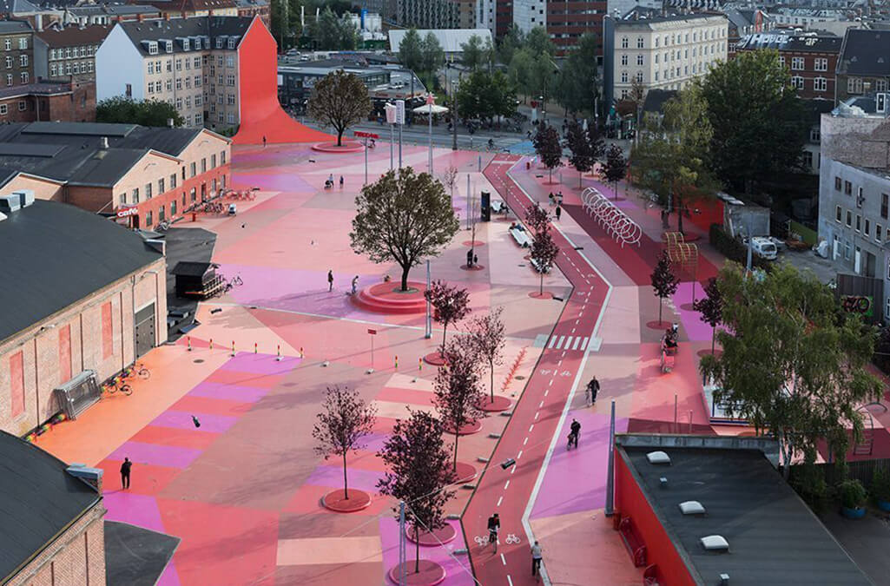

Mēs pētam kādas īpašības un kritēriji raksturo ilgstpējīgu, veiksmīgi izplānotu un izveidotu pilsētas ārtelpu, un, balstoties uz tiem, analizējam dažādas publiskās ārtelpas piemērus pēdējo 15 gadu laikā.
Mūsdienās pilsētas publiskā ārtelpa ir viens no nozīmīgākajiem pilsētvides elementiem, kas dod pozitīvu ieguldījumu dzīves kvalitātei, tāpēc ir svarīgi, lai tā atrastos dzīves vietas tuvumā, būtu ērti pieejama un sasniedzama ikvienam.
Lai spētu izveidot ilgstpējīgu publisko ārtelpu un uzlabot jau esošās, ir svarīgi iedziļināties, kārtīgi izpētīt un izzināt ilgtspējīgas publiskās ārtelpas kritērijus un nosacījumus.
Publiskās ārtelpas izmantošanas mērķi ir daudzveidīgi. Galvenokārt tās paredzētas atpūtai vai dažāda veida aktivitātēm, piemēram, sportošanai, izklaidei vai pastaigai. Tā tiek uzskatīta par izdevušos, ja ārtelpa piesaista lielu skaitu apmeklētāju un kļūst par labvēlīgu vietu sociālajai mijiedarbībai, un kur iedzīvotājs var veikt ierastās ikdienas gaitas ar plašu aktivitāšu klāstu, formālu un neformālu, grupu un individuālu, kā arī demokrātisku un nediskriminējošu. Svarīgi ir nodrošināt ārtelpas pieejamību visu vecumu un sabiedrības līmeņu cilvēku grupām, ieskaitot cilvēkiem ar invaliditāti.
Mēs pētam kādas īpašības un kritēriji raksturo ilgstpējīgu, veiksmīgi izplānotu un izveidotu pilsētas ārtelpu, un, balstoties uz tiem, analizējam dažādas publiskās ārtelpas piemērus pēdējo 15 gadu laikā.
Mūsu mērķis ir pilnveidot un iegūt jaunas zināšanas par pilsētas ārtelpas attīstības tendencēm pasaulē, un pavērt jaunas plānošanas iespējas ainavu arhitektūras jomā.
